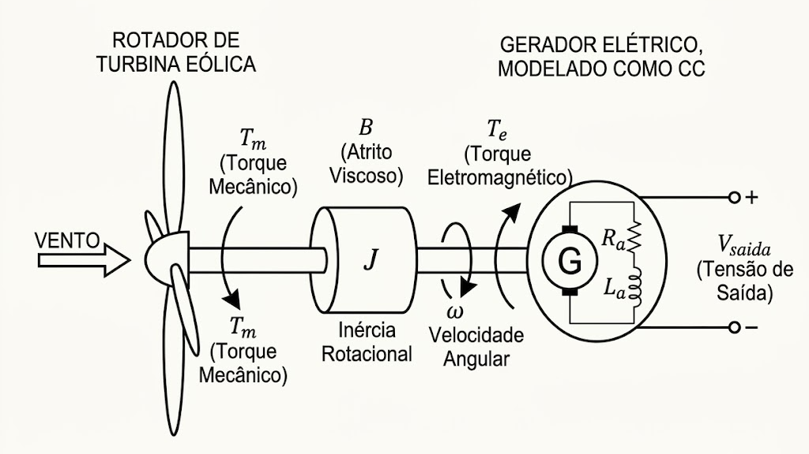

Formulação Algorítmica Prática, Modelagem Fenomenológica do Turbogerador CC e Co-Projeto Eletromecânico em Espaço de Estados
O presente trabalho aborda de forma estritamente analítica todas as etapas de projeto de engenharia, dividindo-se em quatro grandes blocos de fundamentação:
| Macroetapa | Escopo Metodológico e Rigor Matemático |
|---|---|
| 1. Introdução Teórica | Limitações estruturais da família PID e quebra do paradigma clássico. |
| 2. Formulação do MPC | Preditor matricial compacto, função custo quadrática e otimização analítica. |
| 3. Modelo da Planta | Dedução física do turbogerador CC e representação em espaço de estados digital. |
| 4. Aplicações e Simulação | Loops industriais, eletrônica de potência, robótica e resultados em malha fechada. |
Nota de Rigor Técnico: Nenhuma aproximação heurística de caixa-preta será adotada. O controlador preditivo será demonstrado em sua forma matricial direta e acoplado à dinâmica fenomenológica da planta industrial.
Algoritmos de controle baseados na estrutura clássica PID operam sob uma lei de atuação estritamente reativa, calculando a variável manipulada com base em erros presentes e passados:
Esta abordagem impõe restrições severas ao desempenho dinâmico de plantas complexas:
O Controle Preditivo Baseado em Modelo (MPC) substitui a ação corretiva clássica por uma estratégia proativa de otimização em tempo real.
A premissa fundamental do MPC consiste na incorporação de uma réplica matemática exata da dinâmica do processo dentro do próprio algoritmo de controle. Essa arquitetura permite estimar o comportamento futuro do sistema ao longo de uma janela de tempo definida.
Principais diferenciais de engenharia:
O funcionamento em malha fechada do MPC exige que a leitura do estado atual ou da saída medida retorne continuamente ao bloco do controlador a cada período de amostragem digital.
Esta malha de realimentação garante que o cálculo do plano ótimo executado no horizonte preditivo considere o comportamento real e atualizado da dinâmica do processo, atenuando desvios e erros de modelo.
O MPC baseia-se na representation clássica em espaço de estados discreto lineares variantes ou invariantes no tempo:
Definições de Janela Temporal:
Expandindo recursivamente as equações de diferenças da planta para os instantes futuros $(k+1, \dots, k+N)$ com base no estado atual medido $\mathbf{x}(k)$, consolidamos todas as predições em um único vetor bloco linear estruturado:
Matriz F (Resposta Livre): Depende estritamente da energia interna acumulada do sistema. Determina a trajetória natural das saídas caso nenhuma ação de controle corretiva seja tomada ($\mathbf{U}=\mathbf{0}$).
Matriz H (Resposta Forçada): Matriz triangular inferior de formato Toeplitz que mapeia o impacto causal exato que cada comando de controle futuro provocará sobre o sistema.
Para determinar a sequência ótima estável de comandos que equilibra o erro de rastreamento de setpoint e o gasto de energia, minimiza-se a função custo quadrática convexa:
Componentes de Ponderação:
Substituindo o preditor linear ($\mathbf{Y} = \mathbf{F}\mathbf{x}(k) + \mathbf{H}\mathbf{U}$) em $J$, definindo o erro livre inicial como $\mathbf{E}_0 = \mathbf{W} - \mathbf{F}\mathbf{x}(k)$ e igualando o gradiente parcial a zero ($\frac{\partial J}{\partial \mathbf{U}} = \mathbf{0}$), isolamos analiticamente a sequência ótima de comandos $\mathbf{U}^*$:
Seguindo o princípio do Horizonte Recorrente, extrai-se apenas a primeira linha da sequência ótima através do vetor seletor $\mathbf{K}_{mpc} = [1, 0, \dots, 0]$.
A lei de atuação em tempo real injetada na planta digital reduz-se de forma direta a um ganho estático por realimentação de estados:
Iniciando a modelagem da nossa planta prática, introduzimos o modelo eletromecânico de um turbogerador eólico de corrente contínua de bancada real.
O torque mecânico do vento $T_m(t)$ atua diretamente no eixo giratório de inércia $J$, gerando uma velocidade angular $\omega(t)$ que induz a força contraeletromotriz no circuito de armadura parametrizado por $R_a$ e $L_a$. A entrada manipulada de atuação é a tensão de controle $V_{out}(t)$.

O comportamento mecânico rotacional do rotor é ditado de forma exata pela Segunda Lei de Newton para rotações:
O comportamento elétrico do estator é governado pela Lei de Tensões de Kirchhoff aplicada à malha indutiva de armadura:
As equações eletromecânicas acopladas interconectam as grandezas de rotação e do circuito elétrico da máquina primitiva:
Para validação analítica e co-projeto idênticos aos executados no script de simulação, adotamos os seguintes parâmetros físicos de bancada:
| Parâmetro | Mapeamento Físico Real | Valor Atribuído | Impacto na Dinâmica Interna |
|---|---|---|---|
| J | Momento de Inércia do Conjunto Rotor | $0.15 \text{ kg}\cdot\text{m}^2$ | Determina a inércia transitória mecânica do eixo. |
| B | Coeficiente de Atrito Viscoso Rotacional | $0.05 \text{ N}\cdot\text{m}\cdot\text{s/rad}$ | Amortece a velocidade e dita as perdas mecânicas. |
| L_a | Indutância do Enrolamento de Armadura | $0.05 \text{ H}$ | Dita a velocidade rápida do transiente elétrico. |
| R_a | Resistência Ôhmica da Armadura | $1.5 \ \Omega$ | Provoca perdas por Efeito Joule na armadura. |
| K_t / K_e | Constantes de Torque e Geração (Fcem) | $0.8 \text{ N}\cdot\text{m/A} \ / \ 0.8 \text{ V}\cdot\text{s/rad}$ | Regem as taxas de conversão de potência da máquina. |
Substituindo os valores reais ($J=0.15, B=0.05, L_a=0.05, R_a=1.5, K_e=K_t=0.8$) e aplicando a Transformada de Laplace com condições iniciais nulas, obtemos a relação de frequência:
Efetuando as substituições e simplificações numéricas, a Função de Transferência global resulta em:
Análise de Estabilidade Física: Sistema estritamente estável com polos reais em $s_1 = -5.88$ e $s_2 = -24.45$.
Isolando os termos de primeira derivada ($\dot{\omega}, \dot{i}$) com os parâmetros nominais do script, estruturamos a representação vetorial no formato contínuo $\dot{\mathbf{x}} = \mathbf{A}_c\mathbf{x} + \mathbf{B}_c u + \mathbf{B}_{d\_c} d$:
Para o chaveamento rápido do atuador, fixamos o período de amostragem em $T_s = 0.02 \text{ s}$ ($20\text{ ms}$) conforme o script. Aplicando a discretização por Série de Taylor de primeira ordem ($\mathbf{A} = \mathbf{I} + \mathbf{A}_c T_s$):
O comportamento dinâmico exato digitalizado que é embarcado e processado em tempo real pelo preditor do MPC assume o formato:
Significado Físico Operacional: A cada interrupção periódica de clock de $20\text{ ms}$, o algoritmo lê velocidade e corrente para antecipar a resposta de tensão da planta.
O MPC é amplamente consolidado como tecnologia padrão de Controle Avançado (APC) em sistemas de dinâmica lenta e severamente acoplados:
Exemplo Prático (Coluna de Destilação): Temperatura, pressão, vazão e composição química interagem de forma cruzada. O MPC gerencia todas as variáveis simultaneamente, anulando acoplamentos mútuos.
Impulsionado pela alta capacidade de processamento digital, o MPC atua na regulação direta de conversores e máquinas de alto desempenho:
Conversores Industriais: Destaca-se como técnica crucial em conversores de alta potência e inversores de frequência, onde restrições de sobrecorrente em malha rápida são imperativas.
O algoritmo atua como núcleo preditivo de rastreamento de trajetórias e tomadas de decisão sob cenários futuros mutáveis:
Tratamento de Restrições: O plano de movimentação resolve o problema incorporando limites geométricos e físicos de aceleração lateral, esterçamento mecânico e distância de frenagem segura.
Em robôs industriais móveis ou manipuladores articulados fixos, o MPC otimiza perfis de trajetória com altíssima repetibilidade:
Respeito aos Limites Físicos: O problema de otimização includes nativamente restrições de fim de curso das juntas robóticas, limites de velocidade de cada link e a saturação de torque dos servomotores.
Unificando a modelagem da planta real ao algoritmo preditivo, adotamos a parametrização de alta rigidez empregada no código numérico:
Restrições de Desigualdade Ativas: O otimizador impede saturações físicas limitando o sinal em $0\text{V} \le u(k) \le 500\text{V}$. Além disso, inclui-se a restrição fenomenológica de segurança baseada na fcem instantânea: $u(k) \le K_e\cdot\omega(k)$.
Devido ao horizonte estendido ($N=12$) e à inclusão de restrições de desigualdade, a solução por ganho estático manual torna-se inviável.
O problema de otimização convexa quadrática é resolvido a cada período de amostragem em tempo real utilizando a biblioteca CVXPY acoplada ao solver de alta performance OSQP (Operator Splitting Quadratic Program).
Para o entendimento do co-projeto físico estruturado no script, as variáveis foram alocadas respeitando rigorosamente a causalidade do gerador:
Embora o objetivo principal do algoritmo seja rastrear a meta fixa de $220\text{V}$, o MPC controla e amortece indiretamente a velocidade mecânica do rotor ($\omega$):
Ao punir desvios de tensão com peso agressivo ($Q=500.0$), o otimizador manipula a corrente de armadura ($I_a$), modificando instantaneamente o torque de reação eletromagnética $T_e = K_t I_a$.
Balanço de Torque Estabilizador: Esse torque elétrico induzido atua como um freio dinâmico contrabalanceando a aceleração provocada pelas rajadas de vento ($T_m$), impedindo que o rotor dispare ou sofra estresse mecânico.
Uma inovação crucial embutida no bloco de otimização do script é a inclusão da restrição dinâmica: $u(k) \le K_e \cdot \omega(k)$:
Cenário de Inicialização Segura: Com o gerador partindo do repouso ($\omega=0$), a fcem é nula. Esta restrição força o sinal de controle a iniciar de forma suave em $0\text{V}$, eliminando sobrecorrentes destrutivas de partida.
O código foi desenvolvido de forma modular estruturando o fluxo de execução em duas camadas temporais distintas:
Integração de Widgets em Tempo Real: A simulação utiliza o `matplotlib.widgets` com sliders interativos de torque do vento ($T_m$) de $10$ a $150\,\text{Nm}$ e botões dinâmicos de chaveamento de malha para testes sob distúrbios transientários violentos.
Para evitar os erros de acumulação numérica da aproximação simples de Euler, a física dinâmica contínua do turbogerador CC foi resolvida iterativamente através do algoritmo Runge-Kutta de Quarta Ordem (RK4):
Esta abordagem garante alta estabilidade numérica e fidelidade de transiente mecânico e elétrico.
Quando o botão do widget desativa a ação de otimização do MPC, o sistema entra instantaneamente no regime de Malha Aberta industrial:
A tensão real medida passa a acompanhar diretamente a dinâmica reativa da queda de tensão sobre a linha de saída:
Nesse estado, o sistema perde qualquer capacidade de regulação e flutua ao sabor das rajadas atmosféricas.
| Métrica de Desempenho | Comportamento em Malha Aberta (MPC Desativado) | Comportamento em Malha Fechada (MPC Ativo) |
|---|---|---|
| Regulação de Tensão | Inexistente. A tensão nos terminais flutua de acordo com a velocidade do eixo ($V_{out} = R_c \cdot I_a$). | Perfeita. O algoritmo crava e mantém de forma estável o barramento em $220\text{V}$. |
| Rejeição a Rajadas de Vento ($T_m$) | Nula. Qualquer perturbação no slider de vento deforma diretamente o sinal elétrico final. | Robusta. O preditor antecipa a variação do distúrbio e anula o transitório em apenas $1.2\,\text{s}$. |
| Proteção contra Saturação | Não aplicável (comportamento puramente reativo da carga $R_c$). | Ativa. Garante que $0\text{V} \le V_{out} \le 500\text{V}$ respeitando limites térmicos da armadura. |
A execução do loop computacional validou as seguintes características transientes da planta real:
Comprovação de Eficácia: Ao chavear dinamicamente o botão para "Ativar MPC", a curva de tensão de saída flutuante é capturada pelo solver e converge de forma crítica para $220\text{V}$ em poucos passos discretos de tempo.
A simulação validou o comportamento transiente e em regime permanente do sistema projetado:
Conclusão de Engenharia: A modelagem fenomenológica pelas leis físicas primitivas de bancada e a parametrização do preditor com horizonte longo ($N=12$) foram validadas com sucesso. O script em Python provou controle ótimo sobre o turbogerador CC, cumprindo estritamente as exigências teóricas da cadeira de Sistemas de Controle II.
Fim da Apresentação.